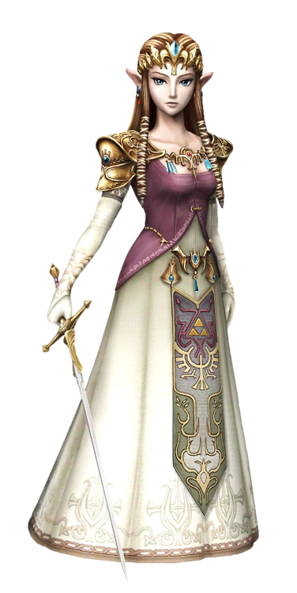
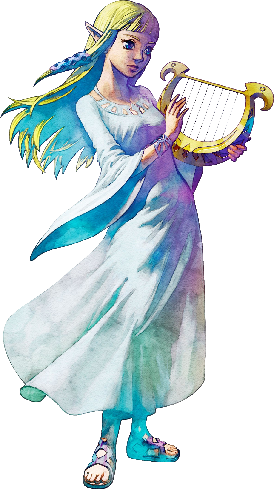
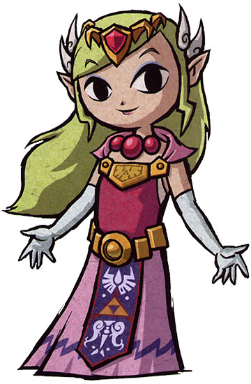
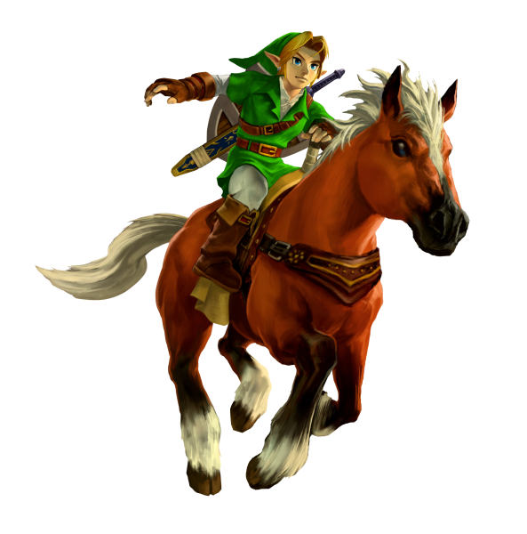
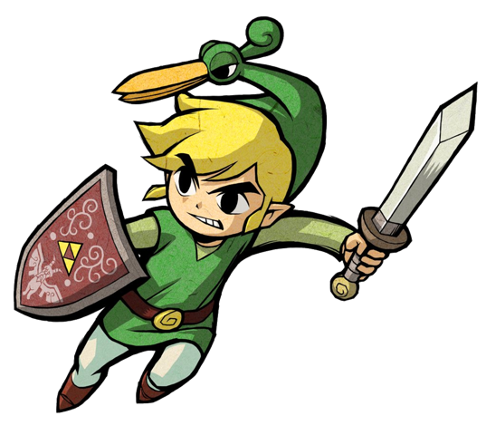
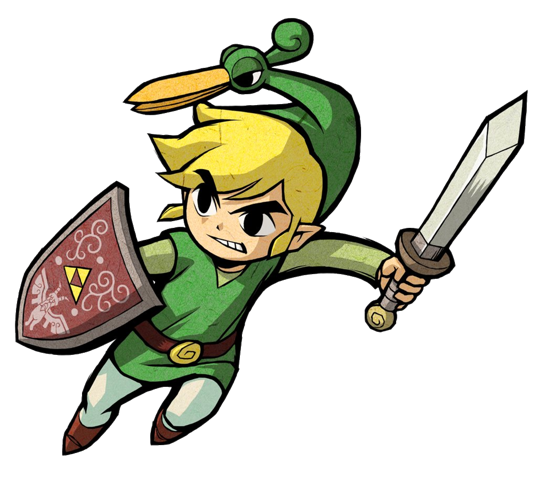
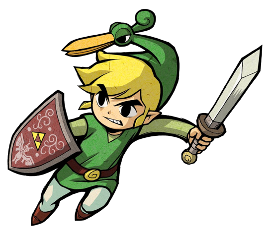
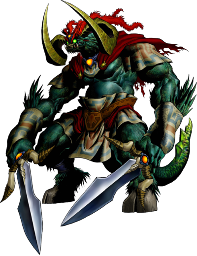
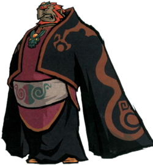

Main Characters



Zelda
Princess of Hyrule
Princess Zelda is the eponymous name commonly given to the females born into the Royal Family of Hyrule in The Legend of Zelda series. With the exception of Link's Awakening, Majora's Mask, and Tri Force Heroes, an incarnation of Zelda or one of her alter egos has always been one of the central characters in the series.
Each incarnation of Zelda has been shown at various ages depending upon which title they appear in. They have appeared as a child, a teenager and as a young adult; for example, the Princess Zelda in Twilight Princess is around 20 years of age.
Early on in the timeline of the series, the original Zelda, while born as a Hylian, is the mortal incarnation of the Goddess Hylia. Carrying on this divine blood, her female descendants are often named after her and are always the crown princess of Hyrule throughout its history. Several princesses within the bloodline are also the possessor of the Triforce of Wisdom, imbued with the essence of the Goddess Nayru. The essence of Nayru affords each Zelda divine wisdom, allowing them to discern the wisest decisions, especially in situations concerning the welfare of Hyrule. It grants them a myriad of mystical abilities, including the ability to heal others, though there is a possibility that this could also be an effect of their bloodline passing down Hylia's own powers and, later, the Light Force.
Link
Hero of Time
Link is the name shared by the main protagonists of The Legend of Zelda series. There are many incarnations of Link, each possessing the Spirit of the Hero, with some of them being blood related as well. They are chosen by the Goddesses to protect the land from evil whenever deemed necessary. In the majority of Zelda games, their adventures take place within Hyrule, traveling through the land, collecting important items, and defeating a wide variety of enemies while trying to save both Princess Zelda and her kingdom from the clutches of Ganon, Vaati, or other villains.
The first Link was introduced as a young Sword-wielding boy, but since The Adventure of Link, the identity, appearance, and role of each incarnation of Link has varied from game to game. Many of the Links are given titles to identify them, such as the Hero of Time in Ocarina of Time and the Hero of Winds in The Wind Waker.

 





Ganon
The Demon King
Ganon also known as Ganondorf, is the main antagonist of The Legend of Zelda series. He has been present since the first game, The Legend of Zelda, and has been present or referred to in most.
Introduced in The Legend of Zelda simply as a monstrous Prince of Darkness, Ganon's character has seen much development throughout the series, from being a simple monster to a powerful warlock with deeper motives to his actions. As the manifestation of the Demon King Demise's hatred for the Goddess and her Chosen Hero, according to the Hyrule Historia, the reincarnation of Demise himself Ganon is destined to eternally reincarnate to pursue world domination. In most cases though, he makes a return after being resurrected or breaking a seal.
Ganon is the possessor of the Triforce of Power, imbued with the essence of the Goddess Din. This divine relic makes Ganon unimaginably strong and grants him boundless mystical power, making him a grave threat to the land of Hyrule and the world. Additionally, Ganon is the source of darkness. As stated in prophecy, the only one capable of defeating Ganon is the Hero who is chosen by the Goddesses.